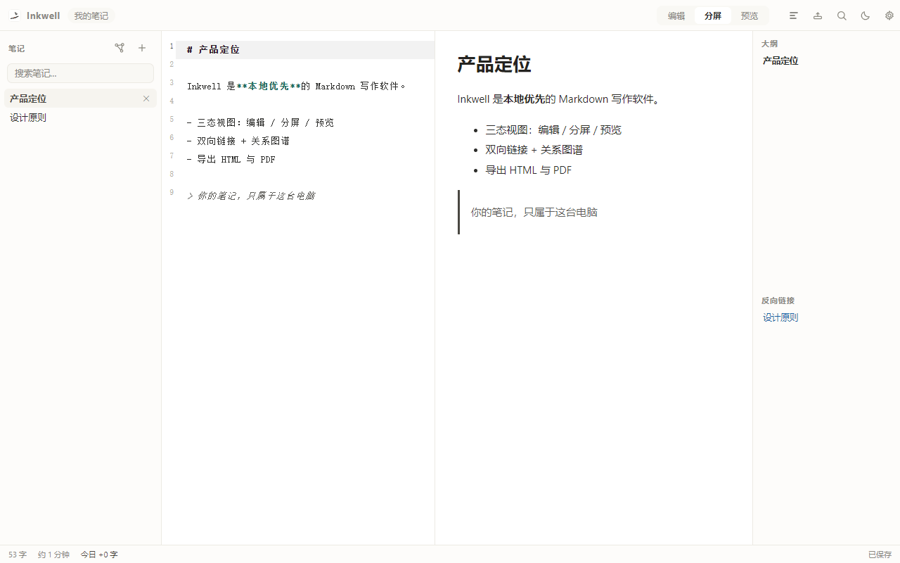

页泊（Pageberth）是本地优先的 Markdown 写作软件：打开一个文件夹就是你的资料库，.md 文件永远是你的文件。不搞数据库、不搞云、不搞账号。

功能一览
| ✍️ 三态视图 | 编辑 / 分屏 / 预览，一键切换，默认分屏 |
| 🎨 代码着色 | 按代码围栏语言给编辑器、预览和导出的 HTML/PDF 着色，明暗主题适配 |
| 🔗 双向链接 | [[笔记名]] 自动建链，点击跳转或创建，支持别名 |
| 🕸 关系图谱 | 零依赖力导向图，节点按连接数加权，孤岛笔记一目了然 |
| 📋 大纲面板 | 六级标题目录，点击跳行，预览模式同步滚动 |
| 🔎 全文搜索 | 跨笔记搜内容，带上下文片段（Ctrl+Shift+F） |
| 📂 外部修改同步 | 文件在其他程序中增删改名后，侧栏、搜索和图谱自动更新；遇到未保存冲突时可对比两个版本、另存本地副本或载入磁盘版本 |
| ⌨️ 长文输入 | 输入时显示统计及预览待更新状态；停笔后更新字数、阅读时长与分屏预览，自动保存区分等待和写入阶段 |
| ⚡ 快速切换 | 最近打开优先的笔记切换器（Ctrl+P） |
| 🖼 图片粘贴 | 在资料库内把剪贴板截图直接贴进笔记，存入 assets/ |
| 🗑 回收站 | 删除先进回收站，可恢复，防手滑 |
| 📤 导出 | 自包含单文件 HTML + PDF |
| 🌗 主题系统 | 明暗模式（可跟随系统）× 5 种主题色 |
| 🌍 三语界面 | 中文 / English / 日本語 |
| ⌨️ 命令面板 | Ctrl+K，所有操作的统一入口 |
| 🔄 自动更新 | 应用内检查更新，进度条 + 重启安装 |
下载安装
从 Releases 下载：
| 平台 | 文件 | 说明 |
|---|---|---|
| Windows | Pageberth Setup *.exe |
引导式安装，可选目录 |
| Linux | *.AppImage / *.deb |
AppImage 免安装直接运行 |
| macOS | *-arm64-mac.zip |
Apple Silicon；未签名，右键打开绕过 Gatekeeper |
构建未签名：Windows SmartScreen 提示请选「更多信息 → 仍要运行」
开发
npm install # 安装依赖
npm run dev # Web 预览 @ http://localhost:5178
npm run typecheck # TypeScript 类型检查
npm run icons # 从 SVG 重新生成应用、安装包及社交图标
npm run electron:dev # 打包并启动桌面应用
npm run electron:build # 产出安装包到 release/
技术栈：Electron · Vite · TypeScript（无框架，原生 DOM）· CodeMirror 6 · marked + DOMPurify · highlight.js
使用“打开文件”单独选中的文件只获得该文件的访问权限；如需粘贴图片，请打开它所在的文件夹作为资料库。更名保留原应用标识和用户资料路径，现有笔记及设置继续可用。当前 Releases 中的旧安装包仍显示 Inkwell，更新后的构建名称为 Pageberth。
License
MIT